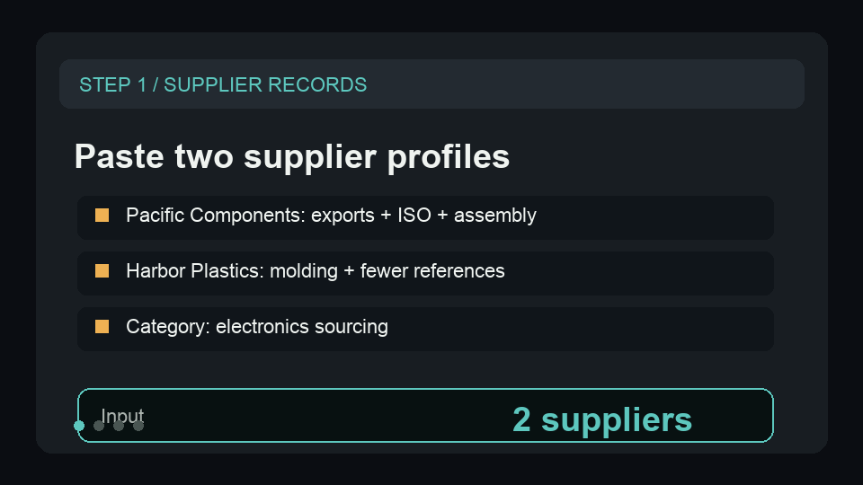

Turn supplier records into a sourcing shortlist.
Use two sample supplier profiles to show capability tags, risk score, opportunity score, and the next sourcing action.
{kind=link}
Show the shortlist decision in under a minute.
The sample compares one strong electronics supplier against one record that needs more verification before outreach.
Paste two records
Use the sample supplier names, descriptions, shipment counts, countries, and certification signals.
Run the analysis
Confirm each row returns capability tags, risk score, opportunity score, and a recommended action.
Route the shortlist
Send high-opportunity suppliers to sourcing outreach and higher-risk suppliers to verification.
Show supplier records becoming a shortlist.
This short GIF previews the sample input, scoring fields, recommended actions, and recurring sourcing watchlist path before a buyer opens the Store page.

A tiny sample for quick proof.
Paste this shape into the Store input before wiring a supplier-directory export or shipment dataset.
{
"defaultCategory": "electronics",
"suppliers": [
{
"supplierName": "Pacific Components",
"description": "ISO certified electronics manufacturer with export shipments and custom assembly capacity.",
"shipmentCount": 120,
"country": "Taiwan",
"certifications": [
"ISO 9001"
]
},
{
"supplierName": "Harbor Plastics",
"description": "Low-volume injection molding shop with consumer packaging work and limited export references.",
"shipmentCount": 14,
"country": "Vietnam",
"rating": 4.1
}
],
"maxSuppliers": 2
}What the buyer should inspect.
This public-safe output snapshot shows the fields that turn raw supplier data into an action queue.
[
{
"status": "succeeded",
"recordIndex": 1,
"billingEventName": "supplier-profile-analyzed",
"supplierName": "Pacific Components",
"category": "electronics",
"country": "Taiwan",
"shipmentCount": 120,
"capabilities": [
"manufacturing",
"export",
"certification",
"industrial"
],
"riskScore": 20,
"opportunityScore": 100,
"recommendedAction": "Prioritize Pacific Components for sourcing research; capabilities suggest a strong fit: manufacturing, export, certification."
},
{
"status": "succeeded",
"recordIndex": 2,
"billingEventName": "supplier-profile-analyzed",
"supplierName": "Harbor Plastics",
"category": "electronics",
"country": "Vietnam",
"shipmentCount": 14,
"capabilities": [
"manufacturing"
],
"riskScore": 45,
"opportunityScore": 58,
"recommendedAction": "Review Harbor Plastics for fit, but verify export references before outreach."
}
]Start with the smallest useful sample.
Start with two supplier records that turn into a shortlist and capability-gap score. Copy the sample, inspect the action fields, then open the Store run when the output matches the workflow you need.
Run a sample
Use two supplier records before connecting a broader dataset.
Inspect action fields
Check capability tags, risk score, opportunity score, and recommended sourcing action.
Route the output
Move useful rows into a sourcing shortlist, verification queue, or procurement follow-up list.
Score two suppliers before uploading the whole shortlist.
Use two public supplier records to prove the capability gap, risk score, and next sourcing action before adding a larger supplier export.
Need this adapted before the first run?
Send a public-safe workflow request if the sample, setup, or output handoff needs a variant.
Keep requests public-safe: no credentials, private URLs, customer data, emails, or sensitive business data.